Circuito do Olival Centenário
Na herdade • 0 kmCaminhadas tranquilas a pé ou de bicicleta entre as oliveiras de produção própria e pastagens da quinta, com silêncio absoluto ao amanhecer.
Um refúgio acolhedor onde o tempo abranda. Casas rústicas independentes integradas no olival centenário da Quinta de Santo António, em Seda, Alter do Chão.
Situada na tranquilidade de Seda, no concelho de Alter do Chão, a Quinta de Santo António preserva a harmonia da vida no campo com o conforto contemporâneo. Um lugar pensado para quem valoriza a calma, o espaço e o tempo sem pressa.
Entregue à porta da casinha ao amanhecer (exceto domingos e feriados) para um despertar aconchegante.
Oferta de boas-vindas de 0.25L de azeite de produção própria e cápsulas de café na casinha.
Na véspera da sua chegada, o acolhimento é preparado pessoalmente com contacto telefónico e envio dos códigos de acesso autónomo, garantindo máxima flexibilidade e segurança.
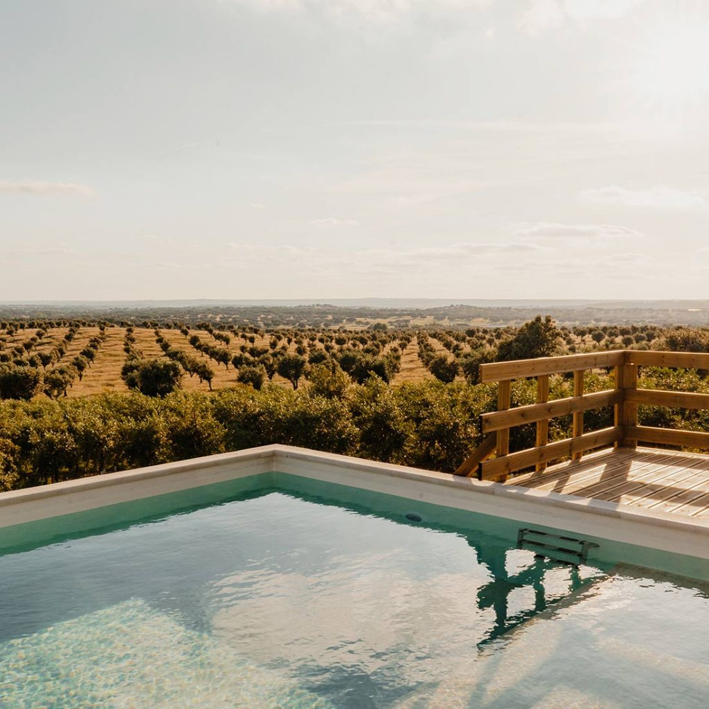

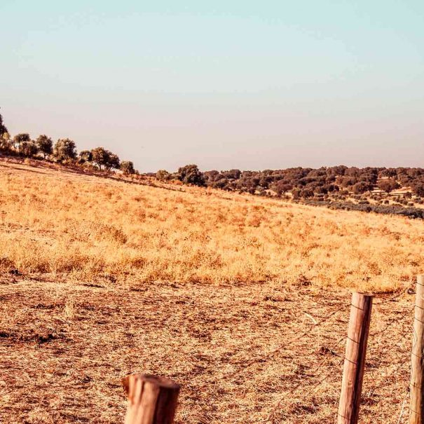
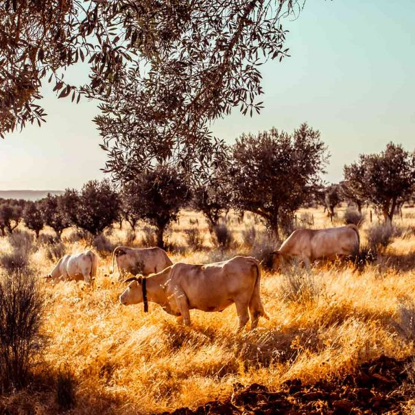
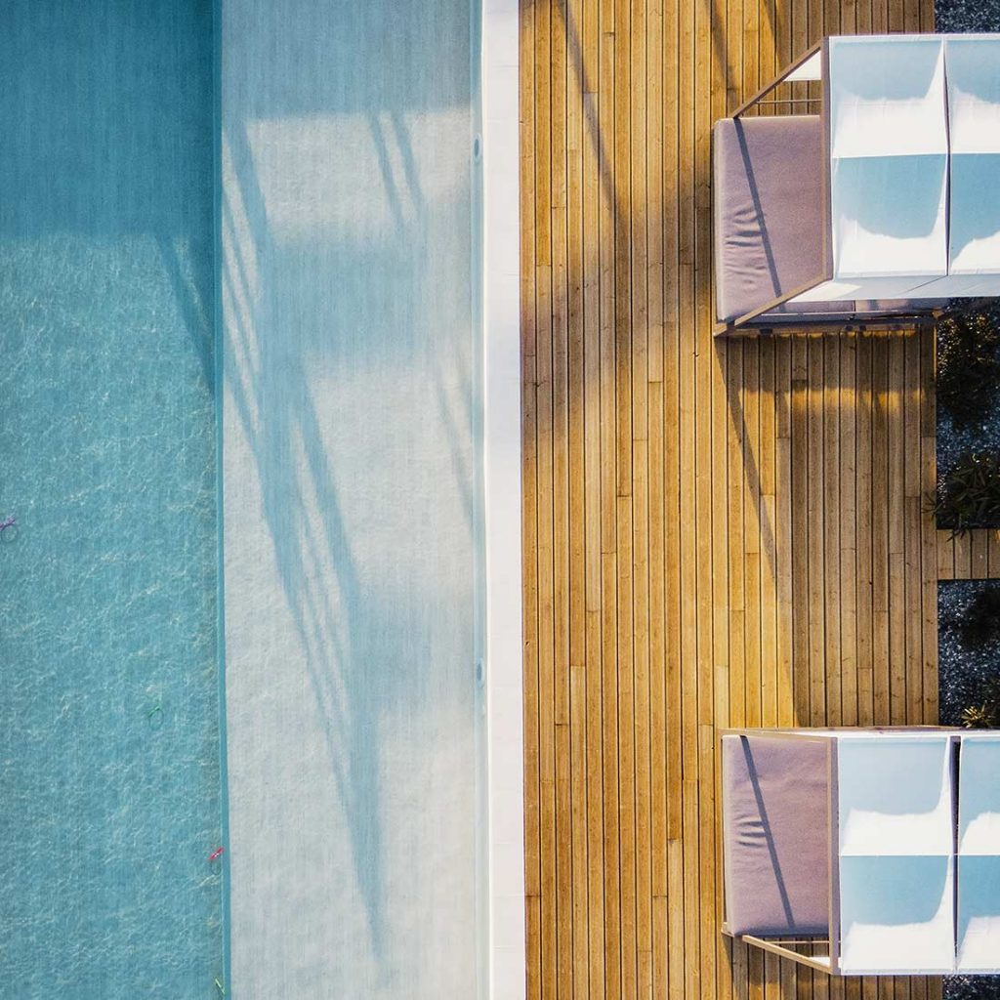
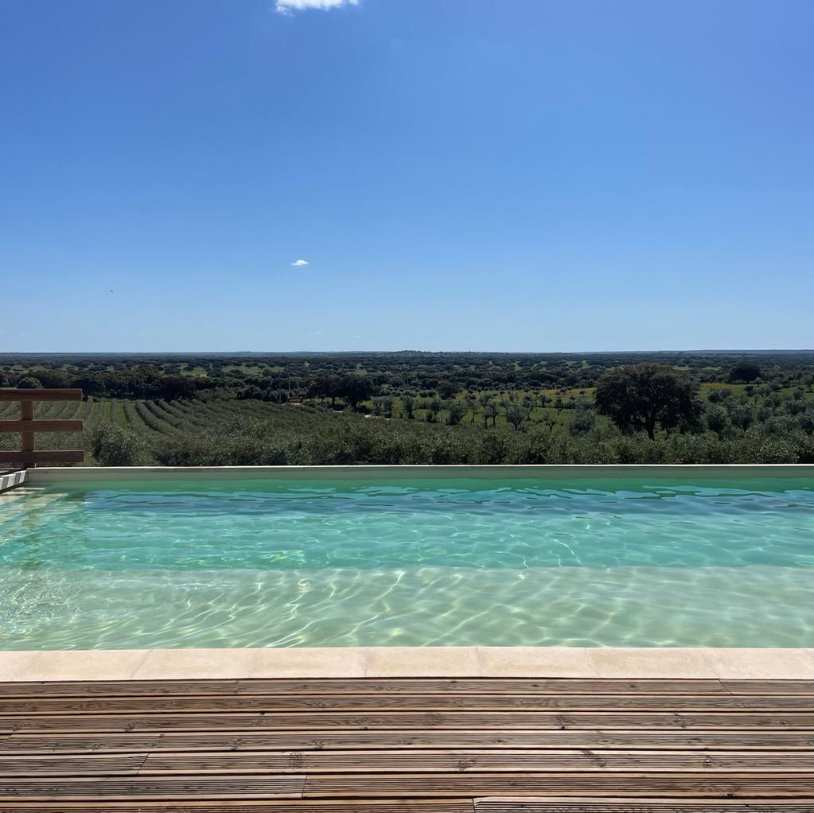
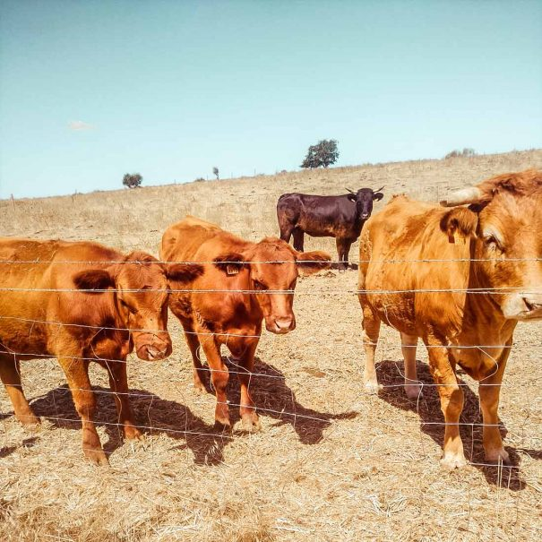
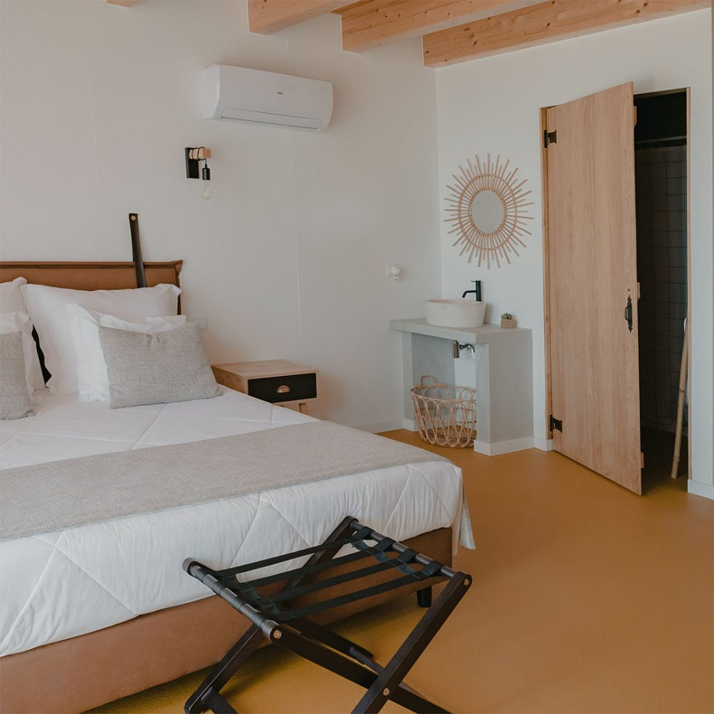
Clique nos pontos numerados na fotografia aérea para conhecer em detalhe as casinhas, a piscina exterior, o olival e a envolvente da Quinta de Santo António.
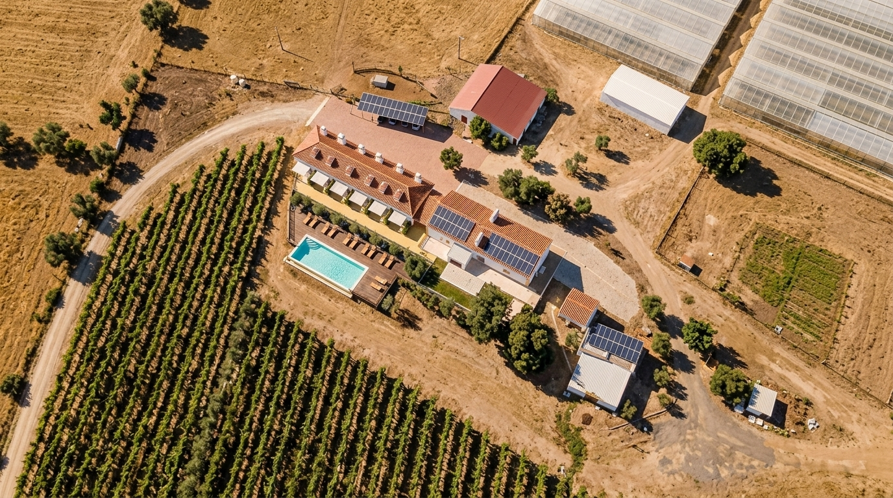
Piscina exterior e solário integrados na tranquilidade e vista aberta sobre o olival.
Oferecemos uma estadia serena num monte tipicamente alentejano com 6 Casinhas unifamiliares em open space (sem portas nem paredes), concebidas para proporcionar privacidade, conforto e repouso absoluto:
Localização privilegiada no Alto Alentejo, perfeita para conjugar o descanso na herdade com visitas culturais e passeios na natureza.
Caminhadas tranquilas a pé ou de bicicleta entre as oliveiras de produção própria e pastagens da quinta, com silêncio absoluto ao amanhecer.
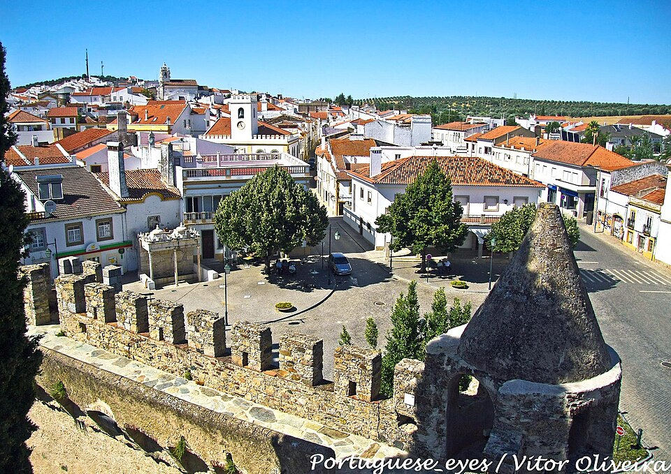
Fortaleza medieval do séc. XIV mandada edificar por D. Pedro I, com imponentes muralhas de pedra e torre de menagem visitável com vista de 360º.
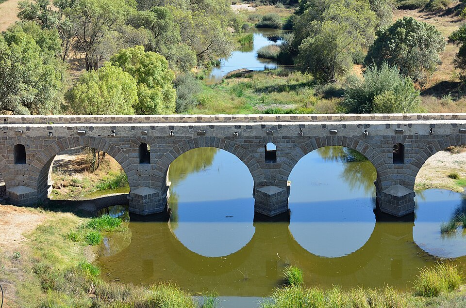
Monumento do séc. I d.C. excelentemente preservado sobre a Ribeira de Seda, com 116 metros de extensão e arcos monumentais em cantaria.
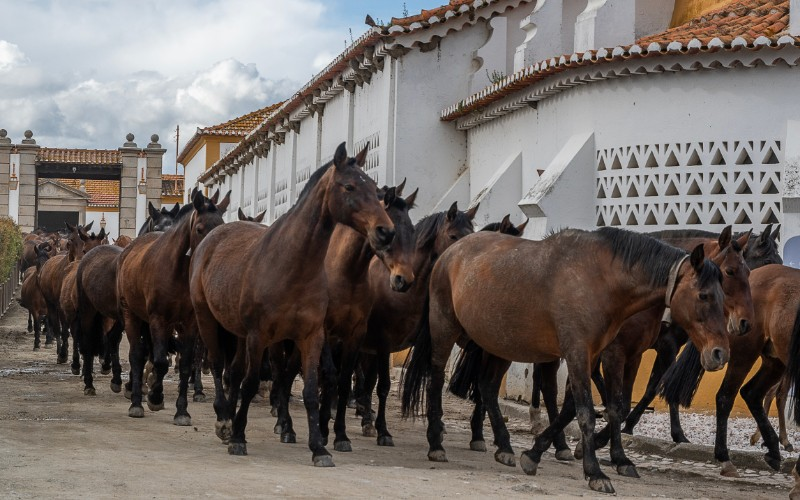
Fundada em 1748 por D. João V, é o mais prestigiado centro do Cavalo Puro Sangue Lusitano. Alberga visitas guiadas às cavalariças e Falcoaria Real.
O reflexo da hospitalidade alentejana, do silêncio da herdade e da atenção cuidada aos pormenores.
"O silêncio é absoluto e a casinha tinha tudo o que precisávamos. O detalhe do pão fresco todas as manhãs deixado na porta e o azeite da herdade fazem toda a diferença. Uma paz difícil de encontrar noutro sítio."
"Excelente refúgio familiar. As crianças adoraram a piscina e a liberdade de correr pelo olival. O check-in autónomo funcionou na perfeição e os anfitriões foram sempre atenciosos por telemóvel."
"Noites estreladas inesquecíveis. A localização em Seda é perfeita para visitar a Coudelaria e descansar sem qualquer ruído. A cama é confortável e a limpeza irrepreensível. Voltaremos certamente."
"A serenidade da herdade supera qualquer expectativa. Pequeno-almoço no terraço com o pão quente da manhã, passeios a pé entre as oliveiras e um pôr do sol alentejano inesquecível."
"Hospitalidade calorosa e atenciosa. O alojamento estava impecavelmente limpo, a piscina tem uma vista desafogada revigorante e a garrafa de azeite da quinta é um gesto de enorme requinte."
"Espaço amplo e acolhedor para a nossa família. A tranquilidade do Alentejo profundo com todo o conforto moderno, desde o ar condicionado à kitchenette bem apetrechada. Sentimo-nos em casa."
Encontre respostas claras para as questões mais comuns ou envie-nos a sua dúvida diretamente.
Todas as manhãs (exceto domingos e feriados), é entregue pão alentejano fresco à porta de cada casinha. As unidades dispõem de cafeteira com café incluído, louças e uma garrafa de 0.25L de azeite virgem extra de produção própria da herdade, garantindo total autonomia e tranquilidade para tomar o pequeno-almoço ao seu ritmo no terraço ou na sala.
O check-in realiza-se a partir das 15h00 e o check-out até às 11h00. O processo é autónomo e muito simples: na véspera da estadia, o anfitrião entra em contacto telefónico para dar as boas-vindas e fornecer os códigos de acesso à sua casinha, permitindo uma entrada flexível e sem esperas.
Sim. As Casinhas T1, T2 e do Olival possuem kitchenette completa com placa de indução, frigorífico, micro-ondas, torradeira, cafeteira e louças para refeições ligeiras com privacidade. A Suíte da Herdade dispõe de frigorífico de apoio e cafeteira.
Sim, a piscina exterior e o solário com espreguiçadeiras e vista aberta sobre o olival são de acesso partilhado e gratuito para todos os hóspedes da herdade durante a época balnear, ideal para momentos de desconexão total.
Sim. A herdade possui 58 hectares e dispõe de estacionamento privativo e gratuito no interior da propriedade, com acesso fácil e direto junto às casinhas, sem necessidade de reserva antecipada.
A aceitação de animais de estimação está sujeita a consulta e confirmação prévia com o anfitrião, de forma a garantir a convivência harmoniosa com os restantes hóspedes e a tranquilidade da herdade.
Sim, dispomos de berço para bebés até 3 anos mediante pedido prévio no momento da reserva. Para famílias maiores, a Casinha Familiar T2 dispõe de dois quartos autónomos e acomoda confortavelmente até 4 hóspedes.
Sim. Todas as unidades contam com ligação à internet Wi-Fi gratuita e de boa velocidade, permitindo tanto navegação pessoal e streaming como estadias de teletrabalho com serenidade no Alto Alentejo.
Envie-nos a sua pergunta antes de reservar. Respondemos com a máxima brevidade por telemóvel ou email.